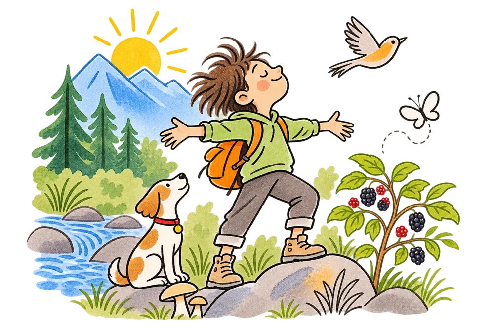
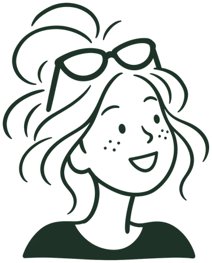

Children grow through what they connect with.
The more I read about what helps children thrive, the more I realized how much their early environment matters. These first years are a remarkable time of growth, when everyday experiences help shape their developing brains, bodies, and well-being.
Bare feet in grass, the hand holding theirs, the food on their plate, the games they invent, the questions they ask. What fascinated me most was how deeply children are connected to the living world around them, and how much these ordinary moments matter.
I organized what I learned into six connected worlds to make the science easier to understand and turn it into playful ideas for everyday life.
Six connected worlds that shape childhood

The Inner World
Microbes, food, and developing biological systems
Life happening inside us.
Explore →
The Living World
Soil, plants, animals, water, and weather
We are part of it.
Explore →
The Moving World
Running, climbing, balancing, building, and falling
The body learns by exploring the world.
Explore →
The Imagined World
Play, stories, and possibilities
What else could this become?
Opening soon
The Wondering World
Questions, attention, and discovery
Opening soon
The Social World
Affection, love, friendship, laughter, family, and community
Opening soonConnected, but connected to what?

We often hear that today’s children are the most connected generation in history. They can talk to someone across the world and explore Mars without leaving the couch. That’s extraordinary.
But when I think of a connected child, I think of a different kind of connection.
Children aren’t just surrounded by the living world. They’re part of it: connected to nature, to other living things, to the people who love them, and to their own bodies. These connections are fundamental to how they grow, learn, and thrive.
As screens take up more of our lives, I hope we make just as much room for the messy, hands-on wonder of childhood.
That’s what The Connected Child is about: things worth knowing, remembering, and trying, to make childhood richer, more curious, and more playful.
Inside every world
Take what you like. Add your own discoveries.
What the science says
A short, plain-language summary of the research, with the sources listed so you can read further.
What it means at home
How the research changed the way I think about our meals, our weekends, and the time we spend outside.
Things to try together
Simple activities to try as a family. Most need nothing more than a kitchen, a backyard, or a walk.
Why I made this
I’ve always thought childhood was a magical time, full of curiosity, imagination, and little adventures worth cherishing, nurturing, and protecting. I loved that freedom as a child, and loved creating it for my own children.
What really helps children thrive?
That question led me to years of reading, exploring, collecting ideas, and trying things with my family. The Connected Child grew from those notes. I wanted to share what I’d learned so other families wouldn’t have to start from scratch, but could take these ideas, make them their own, and keep discovering.
Along the way, I came to believe that caring for our children also means caring for the living world and communities around them. We’re all part of the same ecosystem, shaping and being shaped by the world we live in.
My hope is simply to help make childhood a little richer, more playful, and full of wonder, for our children and the world they’ll grow up in.

HeleneMom of three, champion of muddy boots, big questions, and the wonders of childhood.
We’re for the muddy, curious, wide-awake kind of childhood.
- We believe childhood is a once-in-a-lifetime season of growth: worth protecting, and worth filling with adventure.
- We believe children grow through what they connect with: soil, water, air, food, nature, family, and friends. Bodies that climb and minds that wonder.
- We make room for the messy, hands-on, unplanned hours.
- We follow the science, and we follow the child.
- We’d rather try it than talk about it.
- And we believe caring for children means caring for the living world they belong to.
Bring your boots. Bring your questions. Let’s go explore.
Join the Collective
Get field notes, new research, and playful ideas in your inbox. Start with a free activity pack for the world you choose.
Add to the Collective
For researchers, educators, and credentialed voices
Share a field note with the Collective: a study, a practice, or an idea that can inspire and support families to create rich, playful, supportive environments for their children.
- an idea
- research
- a discovery
- an activity
- inspiration worth passing along
How we choose field notes: each one is rooted in evidence or real expertise, sparks something families can try or see differently, and fits the six worlds and our belief that children thrive through connection.